Les Voitures Audi
Audi incarne l'innovation, le luxe et la performance. Découvrez ses modèles, fusionnant technologie de pointe et design raffiné.
Modèles Emblématiques
Audi A8
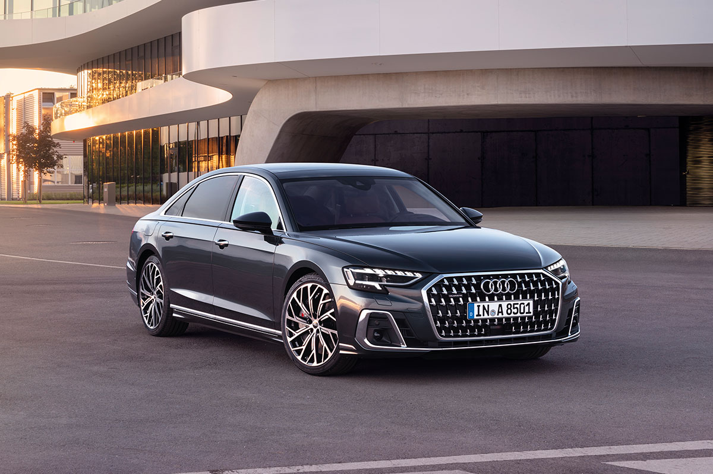Le modèle phare d'Audi, alliant luxe, technologie avancée et performances exceptionnelles.
- Moteur : V6 ou V8
- Puissance : Jusqu'à 500 ch
- Vitesse maximale : 250 km/h
- Accélération 0-100 km/h : 4.2 sec
Audi Q7

Le SUV de luxe Audi qui combine confort, espace et technologie haut de gamme.
- Moteur : V6 TDI ou V6 TFSI
- Puissance : Jusqu'à 335 ch
- Vitesse maximale : 250 km/h
- Accélération 0-100 km/h : 6.3 sec
Audi RS7
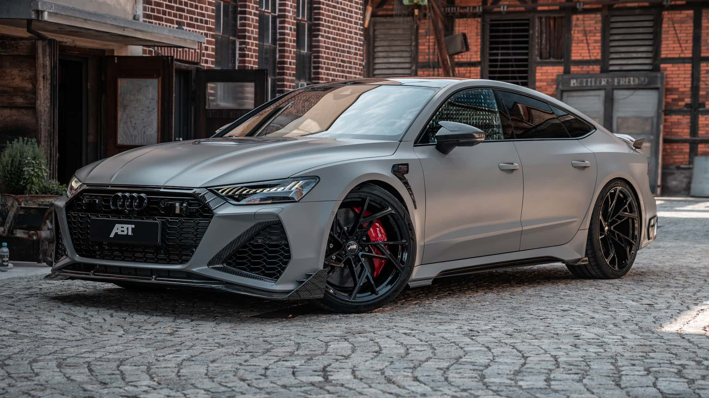Une voiture sport de luxe, alliant des performances incroyables et un design exceptionnel.
- Moteur : V8 Biturbo 4.0 L
- Puissance : 591 ch
- Vitesse maximale : 305 km/h
- Accélération 0-100 km/h : 3.6 sec
Audi R8

Supercar de luxe, la R8 combine puissance, agilité et un design époustouflant.
- Moteur : V10 5.2 L
- Puissance : 602 ch
- Vitesse maximale : 330 km/h
- Accélération 0-100 km/h : 3.1 sec
Audi Q8
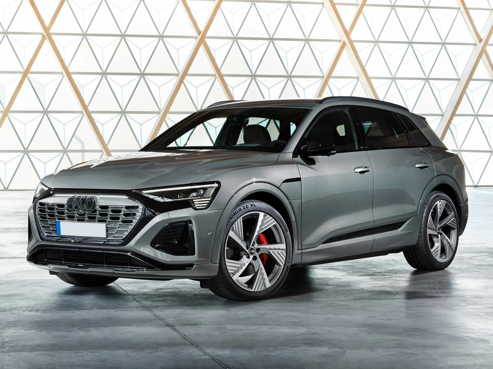Le SUV haut de gamme Audi, avec un design audacieux et une performance impressionnante.
Caractéristiques
- Moteur : V6 TFSI ou V8 TDI
- Puissance : Jusqu'à 600 ch
- Vitesse maximale : 250 km/h
- Accélération 0-100 km/h : 5.6 secondes
Audi S6
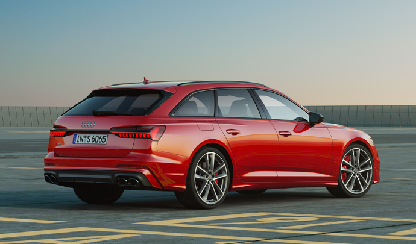La berline sportive qui combine luxe et performances exceptionnelles.
Caractéristiques
- Moteur : V6 Biturbo 2.9 L
- Puissance : 450 ch
- Vitesse maximale : 250 km/h
- Accélération 0-100 km/h : 4.4 secondes
Audi TT
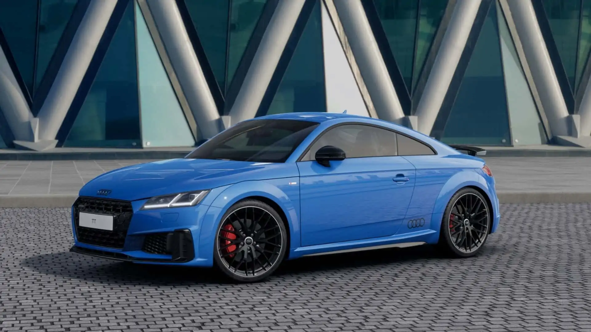Une petite sportive avec un design iconique et une dynamique de conduite incomparable.
Caractéristiques
- Moteur : 2.0 L TFSI
- Puissance : 230 ch
- Vitesse maximale : 250 km/h
- Accélération 0-100 km/h : 5.3 secondes
Audi S3
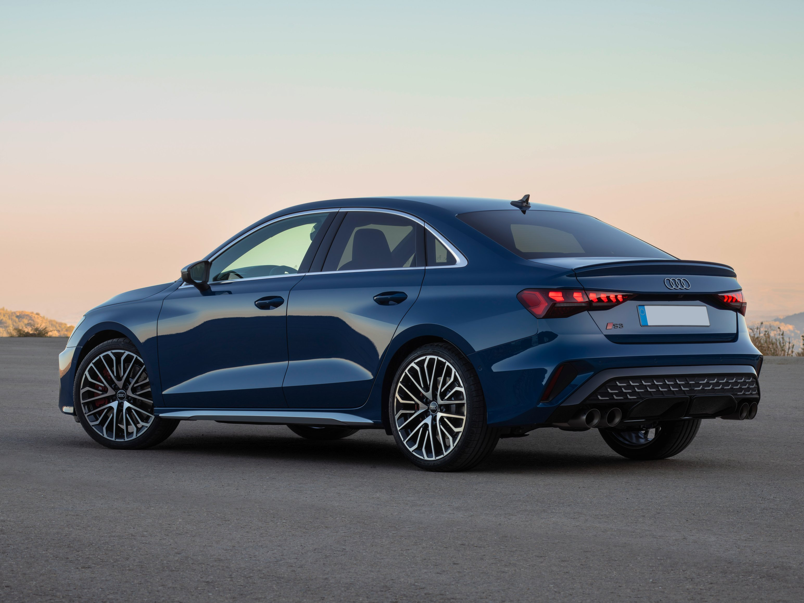Sportive compacte avec une puissance de performance étonnante et un design élégant.
Caractéristiques
- Moteur : 2.0 L TFSI
- Puissance : 310 ch
- Vitesse maximale : 250 km/h
- Accélération 0-100 km/h : 4.8 secondes
Audi RS6
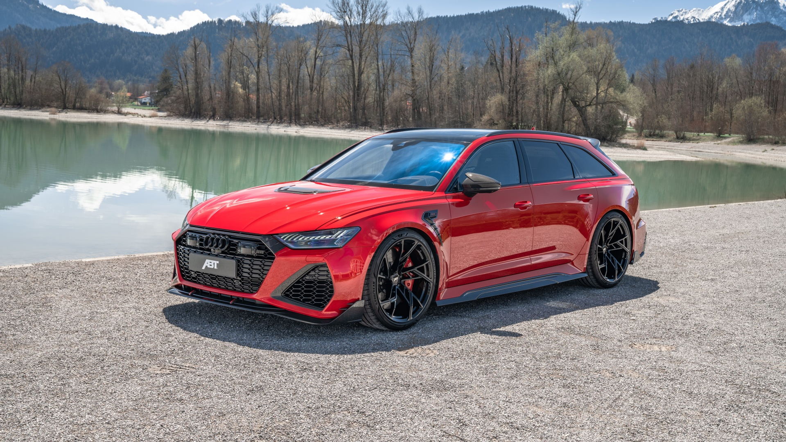Un break de performance extrême, combinant puissance, luxe et agilité pour une conduite inégalée.
Caractéristiques
- Moteur : V8 Biturbo 4.0 L
- Puissance : 600 ch
- Vitesse maximale : 305 km/h
- Accélération 0-100 km/h : 3.5 secondes
Audi RS3
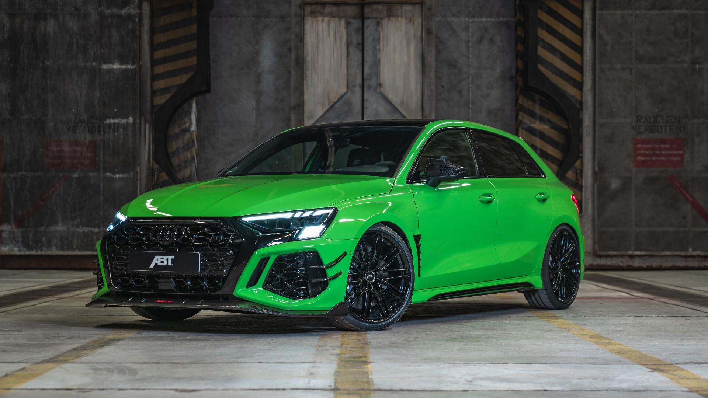Une compacte sportive ultra-performante qui combine puissance et agilité.
Caractéristiques
- Moteur : 5 cylindres 2.5 L
- Puissance : 400 ch
- Vitesse maximale : 280 km/h
- Accélération 0-100 km/h : 3.8 secondes
Audi RS4
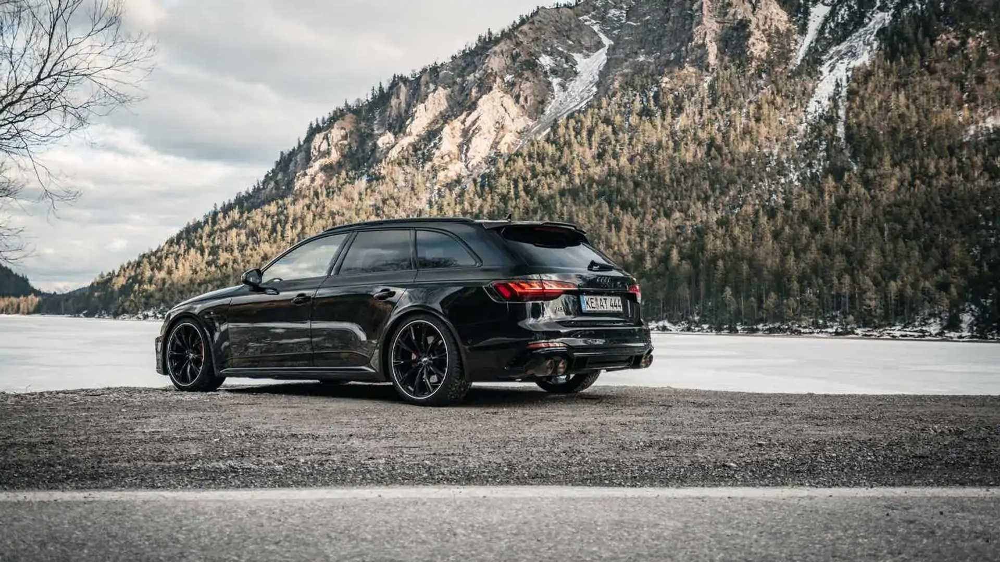Une berline haute performance qui combine luxe et sportivité avec un design exceptionnel.
Caractéristiques
- Moteur : V6 Biturbo 2.9 L
- Puissance : 450 ch
- Vitesse maximale : 280 km/h
- Accélération 0-100 km/h : 4.1 secondes
Audi RS5
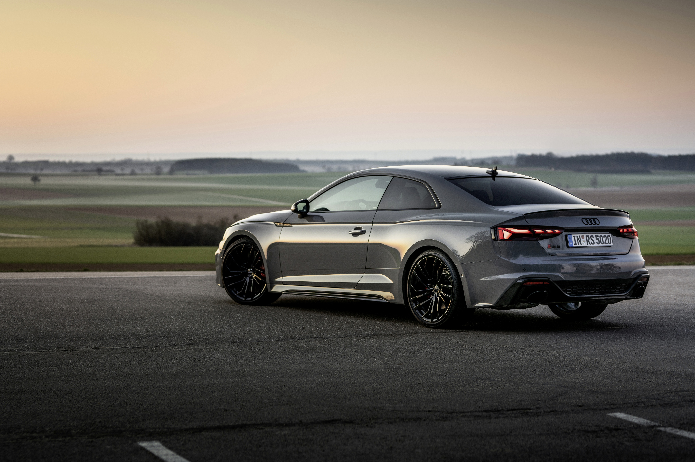Un coupé haute performance, avec une puissance phénoménale et un design agressif.
Caractéristiques
- Moteur : V6 Biturbo 2.9 L
- Puissance : 450 ch
- Vitesse maximale : 280 km/h
- Accélération 0-100 km/h : 3.9 secondes
Audi RS Q7
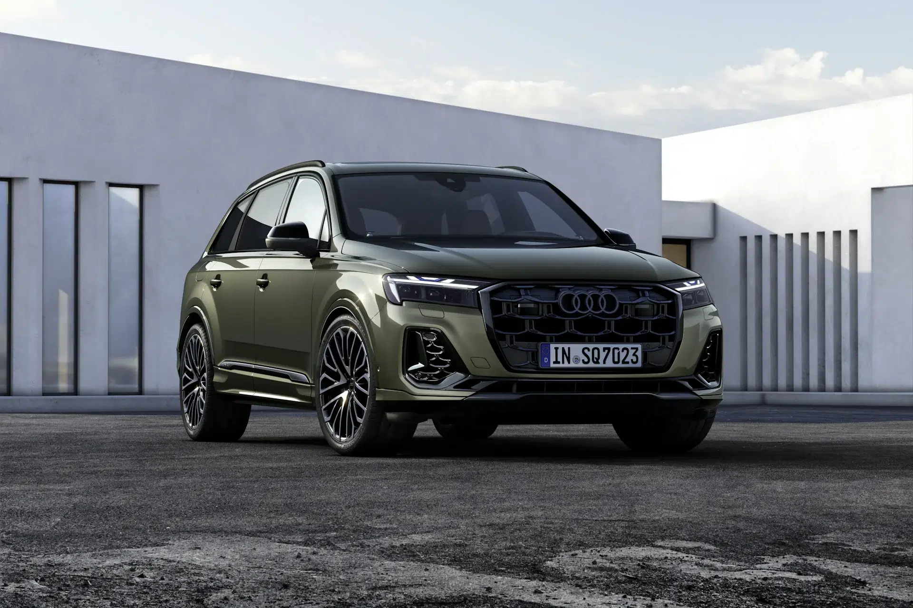Un SUV sportif, alliant performance brute et luxe raffiné.
Caractéristiques
- Moteur : V8 Biturbo 4.0 L
- Puissance : 600 ch
- Vitesse maximale : 250 km/h
- Accélération 0-100 km/h : 3.8 secondes
Audi e-tron

Un SUV entièrement électrique, combinant performance et technologies avancées.
Caractéristiques
- Moteur : Moteurs électriques à double propulsion
- Puissance : Jusqu'à 400 ch
- Vitesse maximale : 200 km/h
- Autonomie : Jusqu'à 400 km (selon la version)
Audi RS Q5
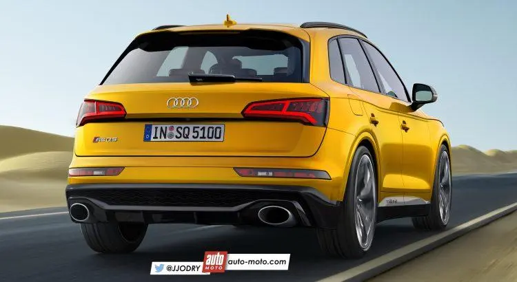Un SUV dynamique avec un moteur puissant et une conduite agile.
Caractéristiques
- Moteur : V6 TFSI Biturbo 2.9 L
- Puissance : 450 ch
- Vitesse maximale : 250 km/h
- Accélération 0-100 km/h : 4.5 secondes
Les Origines d'Audi
Audi a été fondée en 1909 par August Horch, un ingénieur automobile allemand. Après des différends avec son ancienne société, Horch a fondé Audi, qui signifie "écouter" en latin, en référence à son nom de famille, qui signifie "écouter" en allemand. Audi a rapidement acquis une réputation pour ses véhicules innovants et ses performances exceptionnelles.

L'Âge d'Or : Les Années 1960 et 1970
Audi a connu une période de renouveau dans les années 1960 et 1970 avec la production de voitures emblématiques telles que l'Audi 100, qui a marqué le début d'une nouvelle ère pour la marque. Audi a aussi révolutionné l'industrie automobile avec l'Audi Quattro, le premier véhicule de production à posséder une transmission intégrale permanente, un tournant pour les voitures de sport.
Technologie et Innovation
Audi est une marque qui se distingue par ses innovations technologiques dans le domaine de l'automobile, offrant des véhicules de haute performance et confort. L'engagement d'Audi envers l'innovation est reflété dans ses modèles modernes.
- Technologie moteur : Audi utilise des moteurs TFSI et TDI à la pointe de la technologie, offrant des performances exceptionnelles et une consommation réduite.
- Quattro : Le système de transmission intégrale Quattro d'Audi a révolutionné la conduite en offrant une meilleure traction et stabilité sur toutes les surfaces.
- Technologies de conduite autonome : Audi investit massivement dans les technologies de conduite autonome, avec des systèmes comme le pilotage automatique et les systèmes d'assistance à la conduite.
Les Modèles Récents
Aujourd'hui, Audi continue d'innover avec des modèles comme l'Audi A8, un véhicule de luxe avec des technologies avancées, et l'Audi R8, une supercar qui allie puissance et design. Audi propose également des modèles électriques comme l'Audi e-tron, qui représente l'avenir de la mobilité durable.
L'Héritage d'Audi
Audi incarne l'innovation, le luxe et la performance. Depuis sa création, la marque a su s'imposer comme l'un des leaders mondiaux de l'industrie automobile, avec une forte identité fondée sur la qualité, la technologie et le design. Audi continue de fasciner les amateurs de voitures et les passionnés de technologies de demain.